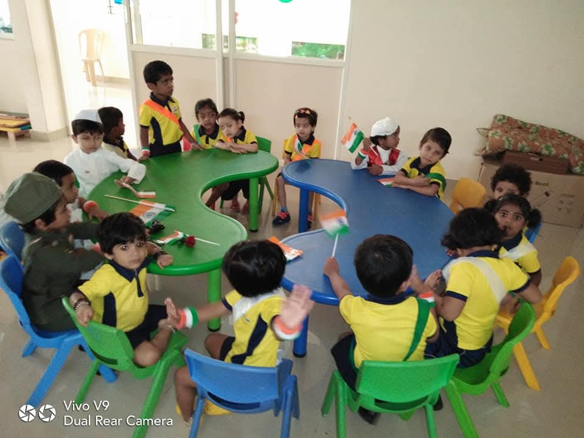
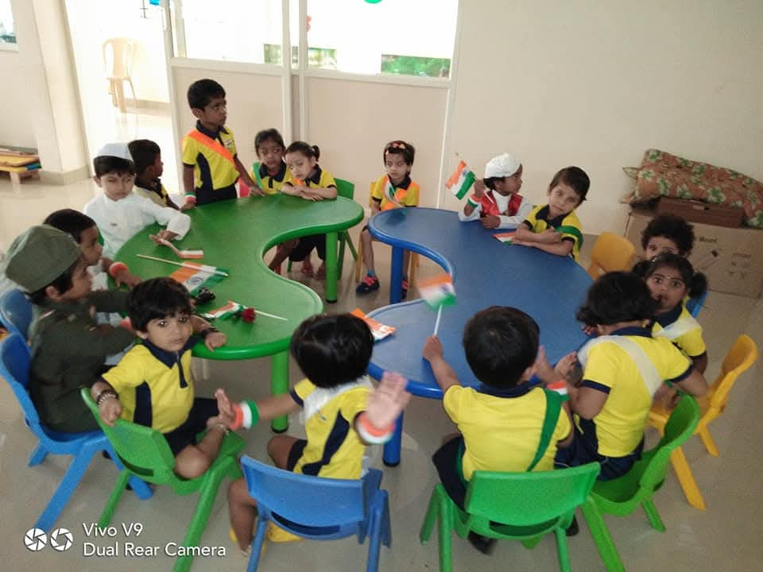
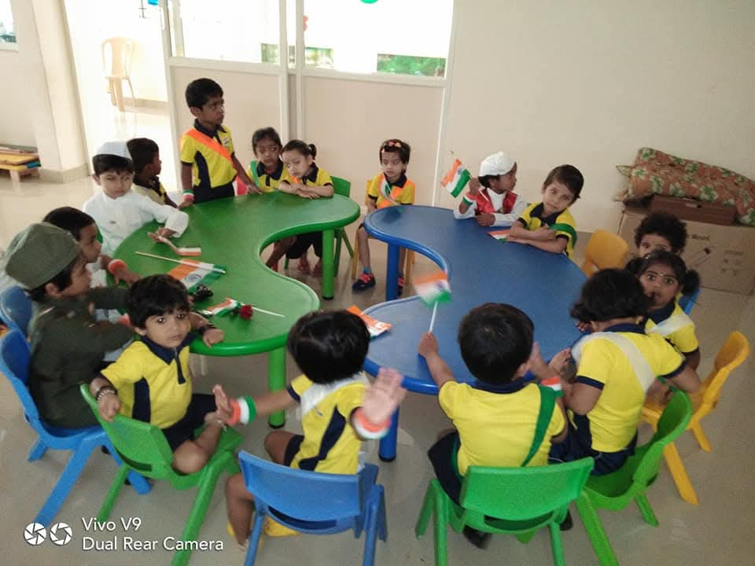

Gallery

 

Creative learning for children aged 18 months – 12 years
Enquire NowTwinkling Petals provides a safe, colourful and nurturing environment where children grow through play, creativity and structured learning.
Our caring teachers, small class sizes and secure campus ensure every child feels confident and happy.

📍 Kaval Bairasandra, Bengaluru
📞 +91 90358 54071
✉️ twinklingpetalspreschool@gmail.com